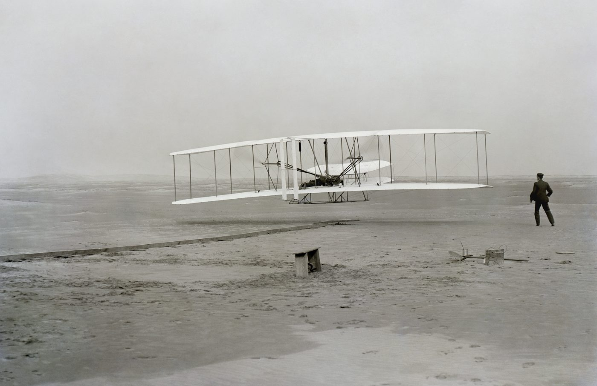

On 17 December 1903, two brothers from Dayton, Ohio, did something people had been dreaming about for centuries. They flew.
Not in a balloon carried by the wind, and not by jumping from a height. They built a machine with an engine, climbed into it, and flew it under their own control.

The first flight lasted twelve seconds and covered 120 feet. The fourth and longest, made around noon at Kill Devil Hills on the North Carolina coast, lasted 59 seconds and covered 852 feet. Five people watched.
Today those numbers sound almost comical. A modern airliner crosses an ocean in a matter of hours. We fly above the weather, move freight between continents overnight, and track an aircraft from almost anywhere on Earth.
But imagine standing on that beach in 1903. You have just watched a machine heavier than air leave the ground and fly.
Surely the world stopped.
It didn't.
The brothers telegraphed their father and asked him to inform the press. The Dayton Journal declined to run the story, judging it not significant enough. A telegraph operator leaked the message instead, and the accounts that spread were distorted enough that the Wrights issued their own statement in January to correct them. No wave of public excitement followed. The coverage simply faded.
The part of the story I hadn't known
Some of that was the world failing to notice. But not all of it. On their lawyer's advice, the Wrights kept the details of the machine quiet while they pursued a patent, and they grew more guarded after Kitty Hawk rather than less. For several years the most important demonstration in the history of flight was something close to a secret its own inventors were actively protecting.
I find that complicates the usual telling. We like the story where the world is too dull to see what is in front of it. Part of the reason the world didn't see it is that the people who did were busy making sure it couldn't.
Either way, the pattern underneath is worth sitting with. Imagine being shown that aeroplane and asked to predict what it would become. You would probably struggle. You would see a fragile wooden machine that could stay up for less than a minute. You would not see transatlantic routes, or overnight freight networks, or millions of people boarding aircraft every day.
The invention was only the beginning.
This happens again and again. A new technology arrives and solves some problem crudely. People compare it with what already exists and find it wanting. Then others build on it, and build on it again, until eventually we look back and wonder how anything worked without it.
Which makes me wonder about what we are watching now.
When we look at AI, are we seeing something close to its final form? Or are we looking at the equivalent of twelve seconds over a beach in North Carolina?
Maybe the hard part of technological change is not recognising that something works. Maybe it is imagining what happens after thousands of people spend the next hundred years building on it.